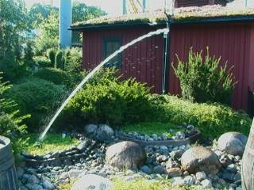
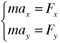

Uppgift 1 och 4 är obligatoriska och den sista av dessa gås igenom vid lektion. Övriga gör du i mån av intresse. Godkända uppgifter innebär att du har nått detta kursmål. (Du får gärna säga till för att få chans att visa högre kvaliteter om det skulle behövas). Lämna in dina lösningar tillsammans med utskrift av denna provlapp. Repetera gärna först vad som händer vid fritt fall, t.ex. med hjälp av "Freefall Lab - Terminal Velocity".
1.
Redovisa dina lösningar till tre valfria övningar i lärobokens kapitel 17, sidan 118–121.
2.
Hur ska man rikta en vattenslang för att strålen ska nå så långt som möjligt? Hur ska man kasta spjut så att det når så långt som möjligt? Hur ska man slå en golfboll så att den når så långt som möjligt? Pröva dig fram i "Golf Range!" och se även om du kan motivera detta teoretiskt på något sätt.

3.
Hur ska man sikta för att träffa ett föremål i fritt fall? Pröva "Shoot the Monkey" och försök motivera med hjälp av de formler du har tillgång till eller kan "skaffa dig".
4.
Varför får kaströrelser formen av en andragradskurva?
I den här uppgiften får du en ordentlig genomgång av kaströrelsens formler. Samtidigt ska du få lära dig hur man kan ställa upp och lösa mekanikens "grundproblem" vilket du har stor nytta av. Metoden är enkel och generell:
Repetera därför först Newtons lagar (som lite förenklat kan uttryckas så här):
Det är framförallt den andra lagen som används vid beräkningar och den skrivs vanligen
Om massan är konstant får vi ma = F. (Varför?)
Hur blir det nu om man t.ex. kastar iväg en snöboll eller skjuter med älgstudsare? (Aj! Akta!)
Jo, då finns det två rörelseriktningar, "framåt" och "uppåt", eller horisontell respektive vertikal led, eller varför inte säga x-led och y-led. Vad är nu krafterna i x-led respektive y-led? Ta reda på detta och ställ upp de två ekvationer man då får:
